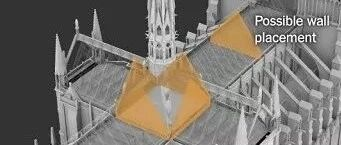

巴黎圣母院火灾损失惨重，中国古建筑有一物可避免悲剧发生 | 利用防火墙控制巴黎圣母院火灾的计算流体力学分析
前言
这是我们关于巴黎圣母院火灾的第三篇分析文章。作为一名从事防灾减灾领域研究的土木工程师，我们不仅和一般民众一样关注各种造成严重后果的天灾人祸事件，而且还关注事件背后的3个“W”：What（具体灾情如何）？Why（为什么会造成这样的灾害）？以及How（如何来避免这样的灾害）？
所以巴黎圣母院火灾发生后，我们本着职业兴趣，首先希望了解火灾到底造成巴黎圣母院哪些部位的破坏（参见此前文章：土木工程师眼中巴黎圣母院火灾的一些资料）。进一步我们希望通过一些科学的研究手段，了解大火蔓延的过程（参见此前文章：转载：巴黎圣母院火灾蔓延过程计算流体力学(CFD)模拟）。最后，我们希望研究一下有没有一些方便高效的手段，避免这样的悲剧重演，这也是本文工作的内容。当然，由于我们自身水平非常有限，且存在时间、资料等各方面的限制，我们现阶段的工作还都是非常粗浅，免不了贻笑大方的。我们的立足点，也是希望把它作为一个科普的手段，促进更多的朋友们来关注、支持土木工程防灾减灾事业。
屋顶防火墙
类似巴黎圣母院这样的木结构屋顶防火，自古以来就是一个难题。在人类长期与灾害斗争的历程中，也探索出了很多卓有成效的方法。例如，去过我家乡安徽的朋友们想必都对徽派建筑上的马头墙（图1）印象深刻。而马头墙除了装饰外，一个很重要的用途就是作为防火隔断，防止火势在屋顶的架空空间里面快速蔓延。而昨日《纽约时报》也提出，巴黎圣母院应该考虑采用防火墙来提高其抗火能力（图2）。

图1 徽派建筑的马头墙（陆新征摄）

图2 《纽约时报》建议的防火墙位置（图片来源：纽约时报）
当然，《纽约时报》提出的设置防火墙的方案只是一个概念建议，到底是否有效需要通过科学手段加以检验。在暂时不具备更好的研究条件的情况下，我们采用此前建立的火灾计算流体力学（CFD）模型，研究《纽约时报》提议的防火墙设置的可行性。
首先告诉大家一个好消息，在按照《纽约时报》的建议设置防火墙后（图3中屋顶处黄色几何体即为防火墙），

图3 方案A模型
火灾流体力学计算软件FDS计算得到的火灾蔓延结果如图4所示。嗯，确实，方案A设置防火墙后，火灾被有效隔断在起火的塔尖底部，没有进一步蔓延到十字形屋顶上，巴黎圣母院的悲剧本是可以避免的。

图4 方案A火灾蔓延结果
那是不是只要设置防火墙就解决问题了呢？事情哪有那么简单啊，我们还做了另一个防火墙设置方案（图5，方案B）。方案A和方案B中防火墙的位置相同，但是高度不同，其中方案A的防火墙高于教堂屋顶，方案B的防火墙与教堂屋顶高度相近。

图5 方案B模型
方案B模拟得到的火灾蔓延结果如图6所示。在方案B中，由于防火墙高度仅与屋顶平齐，不能很好的阻止火苗的蔓延，防火墙并未完全达到抑制火灾蔓延的效果。

小结一下，本文采用CFD模拟对比了不同防火墙布置方案下巴黎圣母院火灾的蔓延过程，从我们简单的模拟中可以得到两个结论：
1）在屋顶增设防火墙对火灾蔓延是有效果的；
2）防火墙不能随意设置，必须进行合理可靠的设计，才能达到抑制火灾蔓延的效果。
后续的话
这里顺便也稍微聊几句，这两天我们收到不少读者来信，问我们：做火灾CFD模拟有什么用？本文算是一个简单的例子来解释工程灾变模拟的价值：第一、很多时候我们由于种种原因缺乏足够的经验，这时工程灾变模拟可以帮助我们理解灾害发生演化的过程和机理；第二、我们很多防灾减灾措施，需要通过必要的灾变模拟分析，才能保障其有效。当然，所有的这些工作，都需要一个准确可靠的工程灾变模拟方法，这也是我们不断努力研究并追求的目标。
土木工程的防灾减灾，上承千年历史文明，下庇亿万黎民苍生，任重道远！
由于我们水平不够，加上时间和资料都很有限，本工作主要是为大家提供一些科普的素材。不足之处，请各位专家多加批评海涵。
---End---

杨哲飚

许镇
相关研究
长按识别二维码，关注我们的科研动态